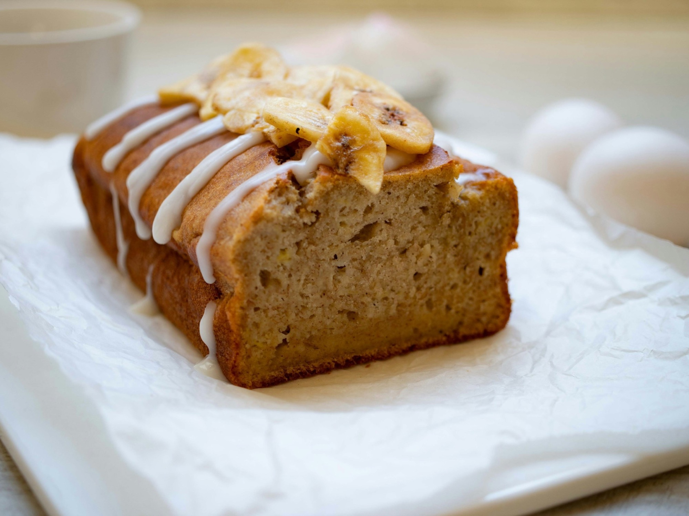

Grandma’s Banana Bread
- 1 h 10 min
- 10 servings
- Baked goods
A moist loaf for very ripe bananas. One bowl, about an hour, 10 slices.
Ingredients
- very ripe bananas3
- melted butter100 g
- brown sugar150 g
- eggs2
- plain flour250 g
- baking soda1 tsp
Method
- Heat the oven to 175°C / 350°F and line a loaf tin.
- Mash the bananas and whisk in the butter, sugar and eggs.
- Fold in the flour and baking soda.
- Bake for 55 minutes, until a skewer comes out clean. Cool for 10 minutes before slicing.
Keep this recipe on your phone
Paste the link to this page into Import in TasteKeep, or tap Share on this page and choose TasteKeep. The recipe lands in your book with the photo, ingredients and steps, and cooking mode runs the 55-minute timer for you.
TasteKeep for iPhone and iPad. Free on the App Store. No account, no subscription.
Photo: Wouter Supardi Salari on Unsplash.